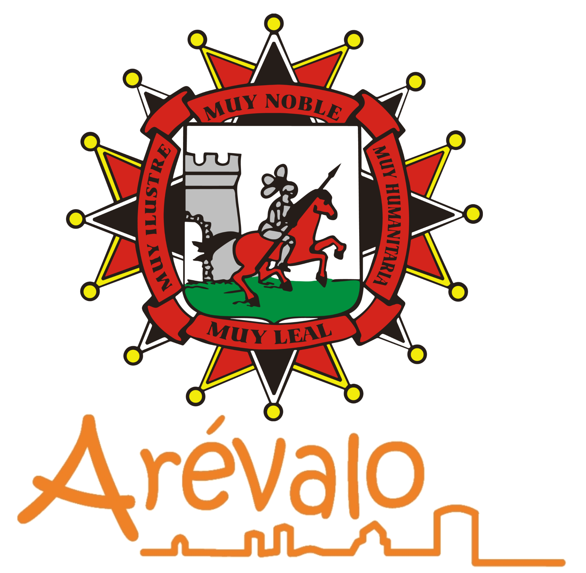

Noticias News Actualités

La ruta NarrArte Arévalo en los medios de comunicación
The NarrArte Arévalo trail in the media
L'itinéraire NarrArte Arévalo dans les médias

La ruta NarrArte Arévalo en los medios de comunicación
The NarrArte Arévalo trail in the media
L'itinéraire NarrArte Arévalo dans les médias